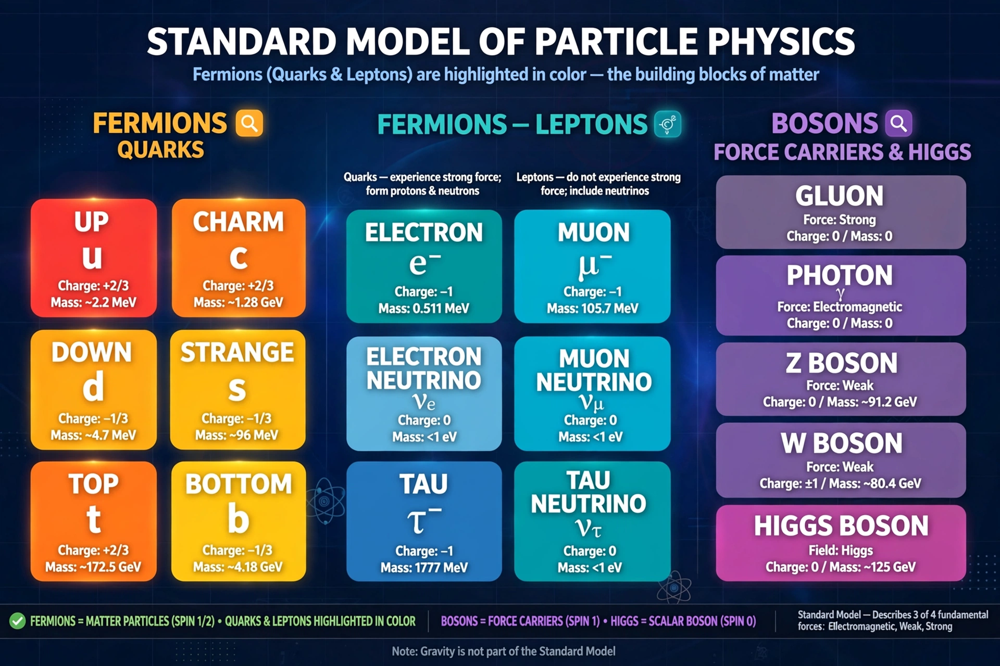

Fermion
From Wikipedia, the free encyclopedia

In Particle physics, a fermion is a particle that follows Fermi–Dirac statistics and obeys the Pauli exclusion principle: no two identical fermions can occupy the same quantum state. Fermions have half-integer spin (1/2, 3/2, …) and constitute the matter particles — quarks and leptons, including the Electron, Proton (composite) and Neutron — in contrast to bosons, the force carriers with integer spin. The class is named after Enrico Fermi.
Statistics and spin
The spin–statistics theorem of relativistic quantum field theory ties half-integer spin to antisymmetric wavefunctions, hence the exclusion principle. Exclusion explains the structure of atoms (electron shells, the Periodic table), the stability of matter against collapse, and the degenerate pressure supporting White dwarfs and Neutron stars.
Types
Elementary fermions are the six quarks (up, down, charm, strange, top, bottom) and six leptons (electron, muon, tau and their neutrinos), each with an antiparticle. Composite fermions include baryons (three quarks) and nuclei with odd nucleon counts (e.g. helium-3, which even becomes a fermionic superfluid). Majorana fermions — particles that are their own antiparticles — are hypothesised for neutrinos and sought as quasiparticles in superconductors for topological quantum computing.
Everyday consequences
Because electrons are fermions, chemistry exists: atoms have volume and structure. Bosonic atoms (even nucleon counts) can instead condense into a single quantum state (Bose–Einstein condensate), a contrast that makes the fermion/boson distinction tangible in the laboratory.